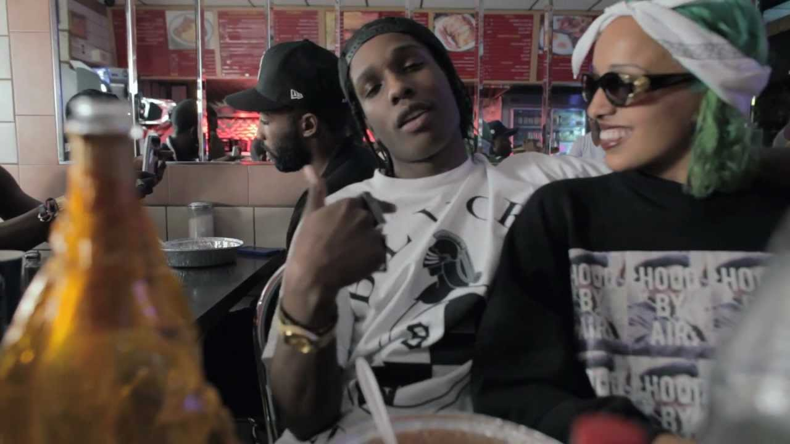
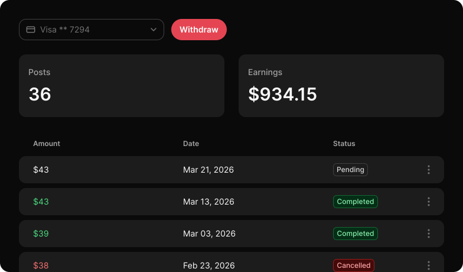

Connecting music with content
Musin is a music promotion platform
that connects music with content creators.


3,818
Tracks available now
8,024
Content creators active
Join as a music artist
Reach new audiences and build engagement around your music through social media content.
Join as a content creator
Discover music that fits your content and get paid to feature it in your social media posts.
How it works
Music Campaign
Music artists upload a track and define the campaign parameters.

Mutual Selection
Music artists choose who posts with their track and content creators choose what to post with.

Post Confirmation
Content creators publish content using the selected track and submit the post link for confirmation.

Pay per Post
Payment is released for each published post after confirmation or automatically if no dispute is opened.

Why it works

FAQ
How much does it cost to join?
Joining is free. There are no listing fees or subscriptions. Musin takes a 20% commission from content creator accounts only on payment for a confirmed post.
What follower count do I need to start earning?
100 followers is enough to start as a content creator. Your follower count sets the upper limit on the price you can ask per post.
Which platforms are supported?
TikTok, Instagram and YouTube for posting, Spotify and SoundCloud for tracks, and Stripe for payouts.
When are payments released?
After the artist confirms the post, or automatically if no dispute is opened. Funds go to the creator's connected Stripe account.
Why does content drive music discovery?
People discover music while watching videos they already enjoy. When a track becomes part of relevant social content it reaches audiences in a natural and memorable context.
How is content-based promotion different from traditional advertising?
Traditional advertising asks people to stop and pay attention. Content-based promotion places music inside something they already chose to watch.
Why use Musin instead of arranging collaborations manually?
Musin brings track discovery, account selection, campaign management, post confirmation and payments into one place instead of relying on scattered messages, spreadsheets and individual negotiations.